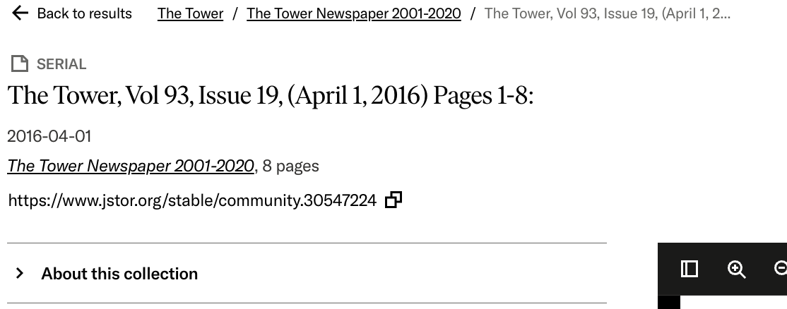
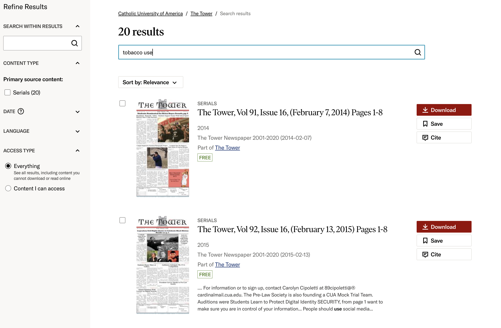
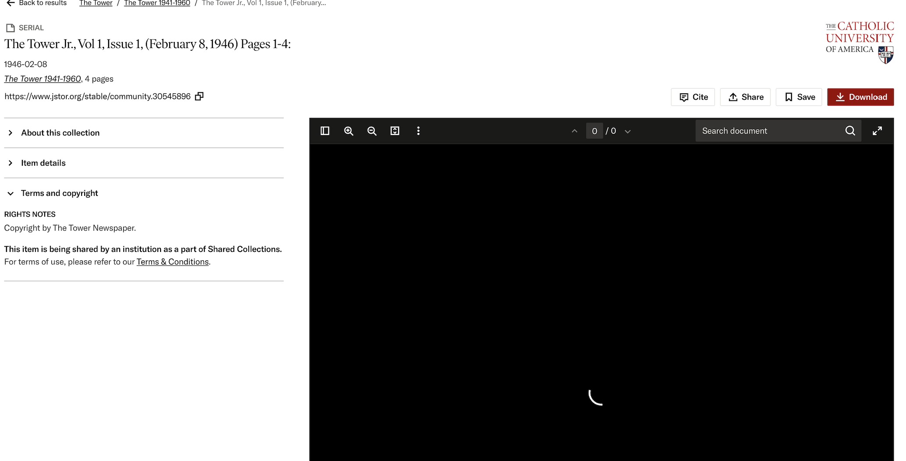
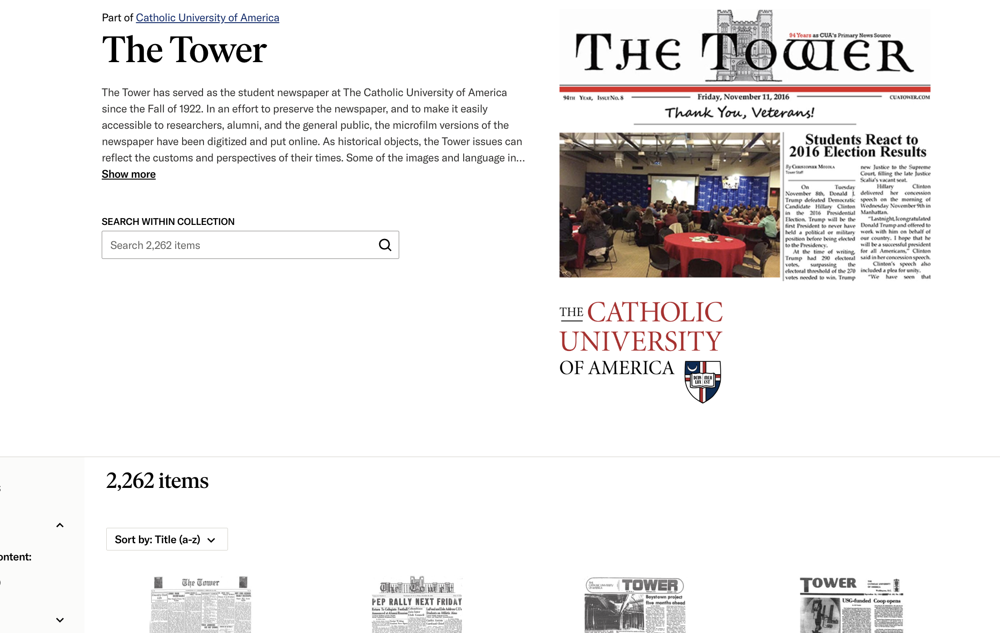

| Input | Output |
|---|---|
| Use the "search within the collection" function to search the terms “library science” | Results appear as thumbnails of the cover of issues of the newspaper. The title of the newspaper, the issue number, and date are included in the results. Users are also given the option to download or save the document and generate a citation. The results are organized by date of publication, beginning with the most recent. The user can filter results by dates, language, and collection, as well as search within the results. There are no specifications as to where in the issue the searched terms are mentioned or located. |
| Click the “Log in” button on the homepage. | User is directed to a new page where they can type in their login credentials or create a new account. Login options with Gmail, Microsoft, or the user’s institution are also available. There are also options to retrieve the user’s password if they have forgotten it or to stay logged in. |
| Click on the link: “Catholic University of America” | User is directed to a new webpage, the homepage of CUA’s archive. CUA’s archive is listed alphabetically, alongside a thumbnail to represent each archive. Some of the collections have detailed descriptions about what they consist of and the number of items in each collection. |
| Click the “cite” button to the left of the descriptive information of an item on the results page. | A new popup window appears titled “Cite this item” and the user is shown citations for the item in multiple formats that can be copied. Citations can also be exported to various websites via links on the pop-up window. |
Undergraduate teacher’s lesson topic: tobacco use
The website does not display recent searches or previously viewed items, meaning users need to rely on memory if they want to go back to them. There is a “save article” option, but this is a step in which the user needs to be proactive and they must make the decision to save the issue immediately. This makes it harder to navigate through previous research over time and users, who are doing research or looking through serials, may be unable to keep track of what they have already seen. This increases the mental effort of the user and makes the research process less efficient.
Results are often not relevant to the searched terms and fail to display how the search terms relate to the results. The search features lack advanced search options and the filters could be more granular in order to yield desired and relevant results. Searching is also not permitted on the document of the serial itself, making it inefficient and difficult for the user to find the desired content and key terms in the result (serial). Users would also benefit from being able to search by article or genre of story. An index of all the articles in each issue could be beneficial for users. The index could have links to each article so that the user does not need to skim an entire issue to find the information they are looking for. Enhancing the search filters and results filters, as well as enabling users to search key terms within each issue would give users more control and make the system more efficient for use. Search term relevance clearly displayed next to each thumbnail on the results page would also improve the user experience.
The website provides feedback for the user when the user interacts with the website, such as a loading spinner when the user is waiting for results or when content is loading. This lets the user know the system is actively working and increases trust in the system. The immediate feedback keeps users informed about the process and validates that their actions are being processed, making the experience more positive and user-friendly.
The system has a simple and clean design with a focus on key functions, particularly searching and accessing the collection. It is designed in a consistent manner, making it predictable for users, thus easier to learn and use because they know what to expect. The minimalist design ensures that users aren’t overwhelmed or distracted by unnecessary elements and features. The research components and access to The Tower collection are the priority and focus of the website design.
Observation and questionnaire submitted separately.
The user was quickly engaged in operating the system and enjoyed browsing the historical editions of the Tower to find the information he was looking for. He had the freedom to explore and was easily able to access issues from a variety of time periods due to the organizational layout of the collection, though the search function did not always provide relevant results. It was easy for him to find the first edition and he later compared it to editions from various eras including the 1940's, 1960's, and 1990's. This aligns with the heuristic analysis of the system, which showed easy navigation through the collection and serials, however the user had to spend time manually browsing issues to locate relevant information because it lacks an efficient search function. The design of the website helped the user get started quickly, but the search capabilities hindered the user’s ability to quickly and efficiently find the needed information. I recommend including a feature in which the searched terms show up highlighted in The Tower issue, so that the user knows exactly where to look.
In order to find the perspectives on campus about WW2 and the Vietnam War, the user attempted to use the search function to find mentions of war in the collection. Those searches came up with no results. In order to find the information, he relied on prior knowledge and recall to search the collection by dates, specifically searching December 1941 and May 1970. Comparatively, when I was searching the website for content on tobacco use from the perspective of an undergraduate teacher, even though the search function was able to yield some relevant results, there were other results that were irrelevant. This shows that the search function does not meet the user’s expectations or needs, as both users were looking to find content and articles on specific topics across the collection. I recommend improving the scope of search functions and creating more robust search filters in order to significantly enhance the user’s experience. Including search term relevance for each result on the results page would also improve the research process.
Both the heuristics analysis and the usability test show that the system is cleanly and simply designed with an interface that makes navigation easy for the user. However, the system struggles with advanced search options and is limited in how users can find their information, making the research process inefficient. The user had difficulties finding articles and content using keywords, and relied on prior knowledge of dates. Furthermore, the inability to search within the issues or by stories highlights the need for improvements on flexibility and efficiency. I recommend incorporating a feature to be able to search by title of stories or genres of stories, enhance search and results filters, and allow users to search terms within individual issues. An index featuring the titles of all the articles in each issue would also be beneficial for users during the research process, as it could have links to each article that the user does not need to skim an entire issue to find the key terms or articles they are looking for. This would give users more control and make the research process more efficient.